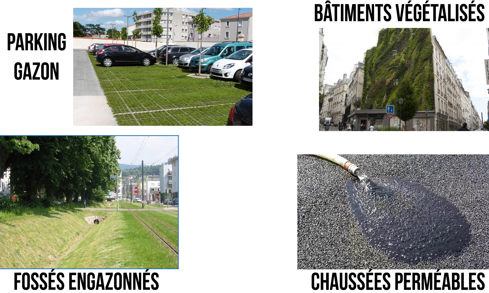
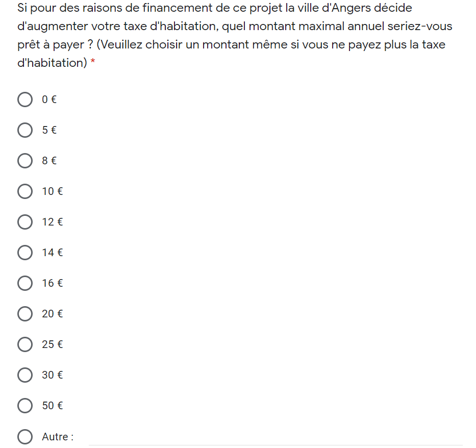

6 Choix de la méthode d’évaluation
Pour répondre à la problématique de ce travail nous optons pour la méthode d’évaluation contingente comme méthode d’évaluation.
6.1 Présentation de la méthode d’évaluation contingente (MEC)
La méthode d’évaluation contingente consiste à reconstituer un marché fictif pour inciter les individus à révéler la valeur qu’ils accordent à un bien ou un milieu naturel, à l’amélioration ou aux dommages que peuvent subir ce bien.
Dans une étude employant la méthode d’évaluation contingente, on réalise des enquêtes auprès d’un échantillon représentatif de la population mère. Au cours de cette étude on soumet aux personnes interrogées différents scénarios fictifs qui permettent d’estimer la valeur qu’elles accordent au bien étudié.
Cette méthode correspond bien à l’objet de notre étude. En effet nous voulons au travers de cette étude conseiller les décideurs publics d’Angers dans le cadre d’une analyse coût-bénéfice sur des mesures destinées à réduire les effets néfastes des îlots de chaleur urbains. Cette étude consistera à évaluer monétairement la variation du bien-être de la population d’Angers bénéficiant des mesures d’atténuation que nous allons proposer.
La mise en place d’une étude par la méthode d’évaluation contingente s’effectue en plusieurs étapes.
6.1.1 Identification du changement de qualité environnementale que l’on cherche à valoriser
Cette étape suppose premièrement que nous ayons défini le travail sur une zone particulière à étudier. La tentation peut être grande de réaliser une telle étude au niveau du département voire même de la région mais nous nous limitons sur la ville d’Angers. Pour nous la zone pour laquelle nous allons évaluer la variation de la qualité de l’environnement est la ville d’Angers.
En économie, l’évaluation de la qualité environnementale se traduit par la variation du niveau de bien-être des personnes concernées par le changement. Notre objectif est de traduire ces variations de bien-être en une mesure monétaire.
6.2 Définir la population concernée
La population concernée par cette étude est la population d’Angers. Nous cherchons à définir un échantillon représentatif de la population. Il est nécessaire de connaître la taille de la population concernée pour obtenir une valeur agrégée pour la population. Il importe de choisir quelle population nous allons étudier : celle des individus ou des ménages ? Le choix entre la population des individus et la population des ménages dépend du support de paiement que nous choisissons dans les questions de valorisation.
Nous choisissons de nous adresser directement à des personnes individuelles plutôt qu’à des ménages. Ce choix permet une diffusion plus simple du questionnaire et permet d’avoir plus de retours.
6.2.1 L’échantillonage
L’échantillonage nous permet de sélectionner une partie de la population à qui soumettre le questionnaire afin. Les résultats issus de l’échantillon analysé doivent permettre de généraliser les conclusion à toute la population. Il existe plusieurs mode d’échantillonage : les échantillons probabilistes et les échantillons à choix raisonné.
Compte tenu du temps et des moyens nous ne pouvons pas réaliser un échantillon probabiliste, nous nous focalisons sur un échantillon à choix raisonné.
Les deux méthode d’échantillonage que nous considérons sont la méthode des quotas et l’échantillon de convenance. Nous faisons une brève description de ces deux méthodes.
6.3 La méthode des quotas
La population est segmentée en fonction de critères définis à priori. A chaque segment de la population correspond un quota, qui indique le nombre de réponses à obtenir. Les quotas sont ensuite remplis en fonction des opportunités qui se présentent ou de façon pseudo-aléatoire.
6.4 L’échantillon de convenance
L’échantillon de convenance, aussi appelé échantillon accidentel consiste à interroger des personnes disponibles selon les circonstances et le contexte. Le chargé d’étude sélectionne un échantillon à sa portée pour recueillir l’information.
L’échantillon de convenance semble le mieux disposé pour notre cas d’étude.
6.5 Rédiger le scénario d’évaluation contingente
Le scénario d’évaluation contingente consiste à donner toutes les informations sur le bien environnemental que l’on cherche à préserver ou un dommage à éviter, en l’occurrence dans cette étude nous voulons éviter une dégradation du niveau de vie causée par les îlots de chaleur dans la ville d’Angers.
Pour faire réaliser aux répondants les enjeux liés aux îlots de chaleur urbain nous avons choisi de mettre en avant les conséquences sur la santé notamment l’épisode caniculaire de 2003 5 qui a entraîné un nombre important de décès.
Voici tel quel le scénario par lequel nous cherchons à recueillir le consentement des Angevins.
Les îlots de chaleur sont connus avec l’effet de serre comme les causes principales du réchauffement climatique en ville. L’épisode caniculaire de 2003 a été très dévastateur et a entraîné une augmentation de 114% du nombre de décès dont principalement des personnes âgées. Les recherches scientifiques réalisées sur ce phénomène suggèrent plusieurs solutions aux îlots de chaleur mais la mise en place de ces solutions demande un financement à la ville d’Angers et donc au contribuable.
Sur l’image ci-dessous nous présentons quelques solutions pour atténuer les îlots de chaleur urbain.

Si pour des raisons de financement de ce projet la ville d’Angers décide d’augmenter votre taxe d’habitation, quel montant maximal annuel seriez-vous prêt à payer ? (Veuillez choisir un montant même si vous ne payez plus la taxe d’habitation)

6.6 Rédiger les questions auxiliaires
Les questions auxiliaires nous permettent de saisir les caractéristiques des personnes qui répondent au questionnaires. Ce sont des questions qui revèlent le revenu de la personne, sa fibre environnementale (savoir si l’individu a un intérêt pour le bien environnemental), l’âge, le genre etc…
Mathiot, C. (2018, 6 août). Combien de morts y avait t-il eu lors de la canicule en 2003? Libération.fr. https://www.liberation.fr/checknews/2018/08/06/combien-de-morts-y-avait-t-il-eu-lors-de-la-canicule-en-2003_1671066↩︎